Aldehyde and Ketones reduction
Aldehydes are reduced to primary alcohols and ketones are reduced to secondary alcohols. In addition, both aldehyde and ketone carbonyl groups can be reduced to methylene groups (−CH2−).
| Aldehydes | Can be Reduced to | Ketones | Can be Reduced to | |
|---|---|---|---|---|
| 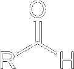 | RCH2OH | 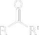 |  | |
| RCH3 | RCH2R' | |||
Metal Hydride Reductions
By far the most common laboratory reagents for reduction of the carbonyl group of an aldehyde or ketone to a hydroxyl group are sodium borohydride, lithium aluminum hydride (LAH), and their derivatives. These compounds behave as sources of hydride ion, H:− a powerful nucleophile, that takes part in a nucleophilic acyl addition reaction.

Lithium aluminum hydride is a very powerful reducing agent; it reduces not only the carbonyl groups of aldehydes and ketones rapidly but also those of carboxylic acids and their functional derivatives (Esters, amides, nitriles, etc). Sodium borohydride is a less reactive and, therefore, a much more selective reagent, reducing only aldehydes and ketones rapidly. Neither reagent reduces alkenes or alkynes to alkanes.
Reductions using sodium borohydride are most commonly carried out in aqueous methanol, in pure methanol, or in ethanol. the initial product of reduction is a tetraalkyl borate. In a second step, the chemist opens the flask and adds water which, on warming with water, is converted to an alcohol and sodium borate salts. One mole of sodium borohydride reduces four moles of aldehyde or ketone.
| 4 | + | NaBH4 | CH3OH ⟶ | (RCH2O)4B−Na+ A tetraalkyl borate | H2O ⟶ | 4 RCH2OH | + | borate salts |
The mechanism is the following
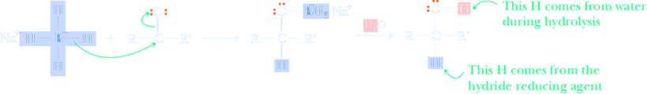NaBH4 is less reactive than LiAlH4 and reduces only aldehydes or ketones, therefore if both a ketone and an ester functional group are present in a molecule, and the goal is to reduce only the ketone, only NaBH4 gives the required result.
|  Methyl 3-oxobutanoate | 1. NaBH4/CH3CH2OH ⟶ 2. H3O+ |  Methyl (R)-3-hydroxybutyrate Only the ketone is reduced |
Lithium aluminum hydride is a much stronger reagent tha NaBH4 and reacts violently with protic solvents like water, alcohols, and others to liberate hydrogen gas and form metal hydroxides and alkoxides. This because Al is less electronegative (more electropositive) than B, the hydrogens in −AlH4 are less strongly bound to the metal and more negatively polarized. They are thus much more basic (as well as nucleophilic) and are attacked vigorously by water and alcohols to give hydrogen gas. Therefore, reductions of aldehydes and ketones using this reagent must be carried out in aprotic solvents, most commonly diethyl ether (Et2O) or tetrahydrofuran (THF).
The stoichiometry for lithium aluminum hydride reductions is the same as that for sodium borohydride reductions: one mole of lithium aluminum hydride per four moles of aldehyde or ketone. Because of the formation of gelatinous aluminum salts, aqueous acid or base work-up is usually used to dissolve these salts.
| 4 | + | LiAlH4 | ether ⟶ | (R2CHO)4Al−Li+ A tetraalkyl aluminate | H2O ⟶ H+ or OH− | 4 RCH(OH)R | + | aluminium salts |
On the alcohol product, the hydrogen atom bonded to carbon comes from the hydride reducing agent, and the hydrogen atom bonded to oxygen comes from water during hydrolysis of the metal alkoxide salt.
LiAlH4 reduces esters to primary alchohols
|  Methyl 4-methoxybenzoate (Methyl p-methoxybenzoate) | 1. LiAlBH4/ether ⟶ 2. H3O+ |  4-Methoxybenzyl_alcohol.png (p-methoxybenzyl alcohol) |
Selective Reduction
Therefore, when a compound contains both C=O group and a C=C bond, selective reduction of one functional group can be achieved by proper choice of the reagent. Using metal hydride reductions, it is possible to reduce an aldehyde or ketone carbonyl group without reducing any C=C bonds that might be present in the same molecule. The metal hydride reducing agents like LiAlH4 and NaBH4 are nucleophilic reagents. Functional groups that are not electrophiles, such as C=C bonds in alkenes, do not react.
| Methyl 3-oxo-4-pentenoate | |
| ↓ NaBH4,EtOH | ↓ LiAlH4,H3O+ |
| ↓ | ↓ |
Methyl 3-hydroxy-4-pentenoate | 1,3-4-Pentendiol |
Nucleophilic addition of a hydride to the electrophilic carbonyl carbon atom gives a tetrahedral carbonyl addition compound. In a second step, the chemist opens the flask and adds water to give the alcohol product.
Alternatively, selective reduction of a carbon-carbon double bond in the presence of a carbonyl group using rhodium on powdered charcoal as a catalyst.

Catalytic Reduction
The carbonyl group of an aldehyde or ketone is reduced to a hydroxyl group by hydrogen in the presence of a transition metal catalyst, most commonly finely divided platinum or nickel. Reductions are generally carried out at temperatures from 25 to 100°C and at pressures of hydrogen from 1 to 5 atm. Under such conditions, cyclohexanone is reduced to cyclohexanol.
 Cyclohexanone | + | H2 | Pt ⟶ 25°C, 2 atm | Cyclohexanol |
Catalytic reduction of aldehydes and ketones is simple to carry out, yields are generally very high, and isolation of the final product is very easy. A disadvantage is that some other functional groups are also reduced under these conditions, for example, carbon-carbon double and triple bonds.
trans-2-Butenal (Crotonaldehyde) | + | 2H2 ⟶ Ni |
 1-Butanol |
Clemmensen reduction: Reduction of a Carbonyl Group to a Methylene Group
Several methods are available for reducing the carbonyl group of an aldehyde or ketone to a methylene group (−CH2−). One of the f rst discovered was refluxing the aldehyde or ketone with amalgamated zinc (zinc with a surface layer of mercury) in concentrated HCl.
|  1-Phenylethan-1-one (Acetophenone) | Zn(Hg), HCl ⟶ |  Ethylbenzene |
This reaction is known as the Clemmensen reduction after the German chemist, E. Clemmensen, who developed it in 1912. The mechanism of Clemmensen reduction, although not well understood, involves transfer of electrons from the Zn to reduce the carbonyl group.
Because the Clemmensen reduction requires the use of concentrated HCl, it cannot be used to reduce a carbonyl group in a molecule that also contains acid- sensitive groups, such as a tertiary alcohol that might undergo dehydration, or an acetal that is hydrolyzed so that its resulting carbonyl group is also reduced.
 Benzaldehyde | Zn(Hg), HCl ⟶ |
Methylbenzene (Toluene) |
We noted that ketones can be converted into hydrazones. This transformation has practical utility, because hydrazones are readily reduced under strongly basic conditions.
|  (1E)-(1-Phenylpropylidene)hydrazine A hydrazone | KOH/H2O ⟶ Δ |
Ethylbenzene (Toluene) 82% |
This is called the Wolff-Kishner reduction, discovered independently by the russian chemist N. Kishner in 1911 and the german, L. Wolff in 1912 and reported within months of Clemmensen’s discovery, is an alternative method for reduction of a carbonyl group to a methylene group. In this reduction, a mixture of the aldehyde or ketone, hydrazine, and concentrated potassium hydroxide is heated at reflux in a high-boiling solvent such as diethylene glycol (bp 245°C).
Cyclohexanone | [H+] HO−NH2 ⟶ −H2O | 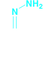 (A hydrazone) | KOH/H2O ⟶ Δ | Cyclohexane 80% | + | N2 |
1-Phenylethan-1-one (Acetophenone) | + | H2NNH2 (Hydrazine) ⟶ KOH | diethylene glycol (reflux) Ethylbenzene |
The second part of the Wolff–Kishner reduction is believed to proceed via the following mechanism

Each of the reductions has its special conditions, advantages, and disadvantages. The Clemmensen reduction cannot be used in the presence of groups sensitive to concentrated acid, the Wolff-Kishner reduction cannot be used in the presence of groups sensitive to concentrated base. However, the carbonyl group of almost any aldehyde or ketone can be reduced to a methylene group by one of these methods.